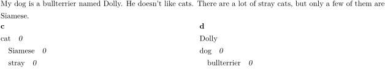
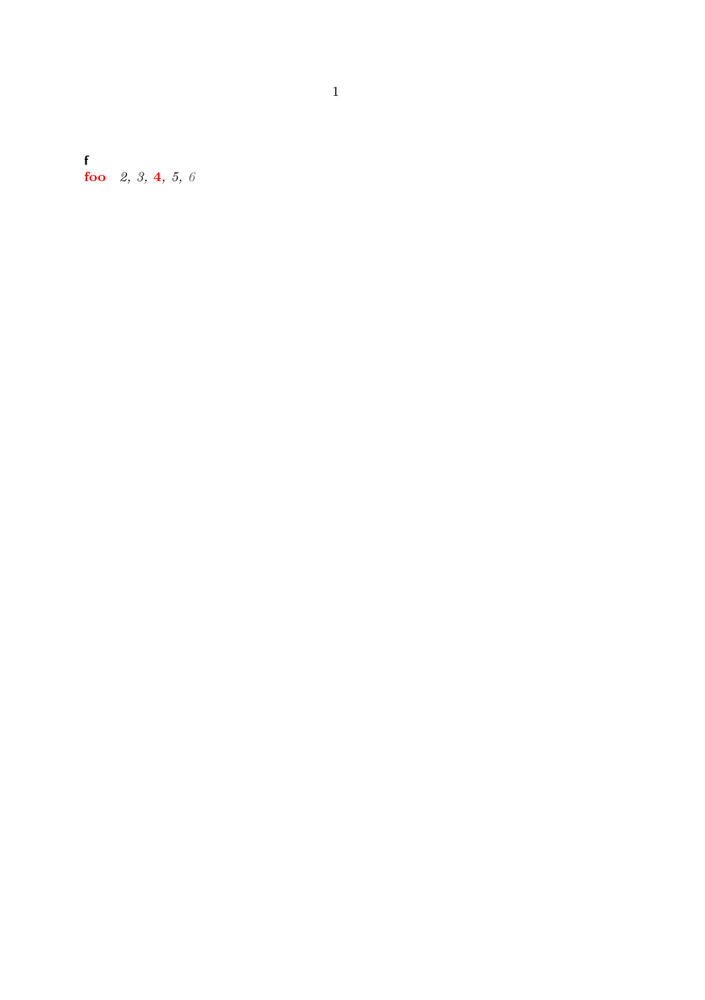
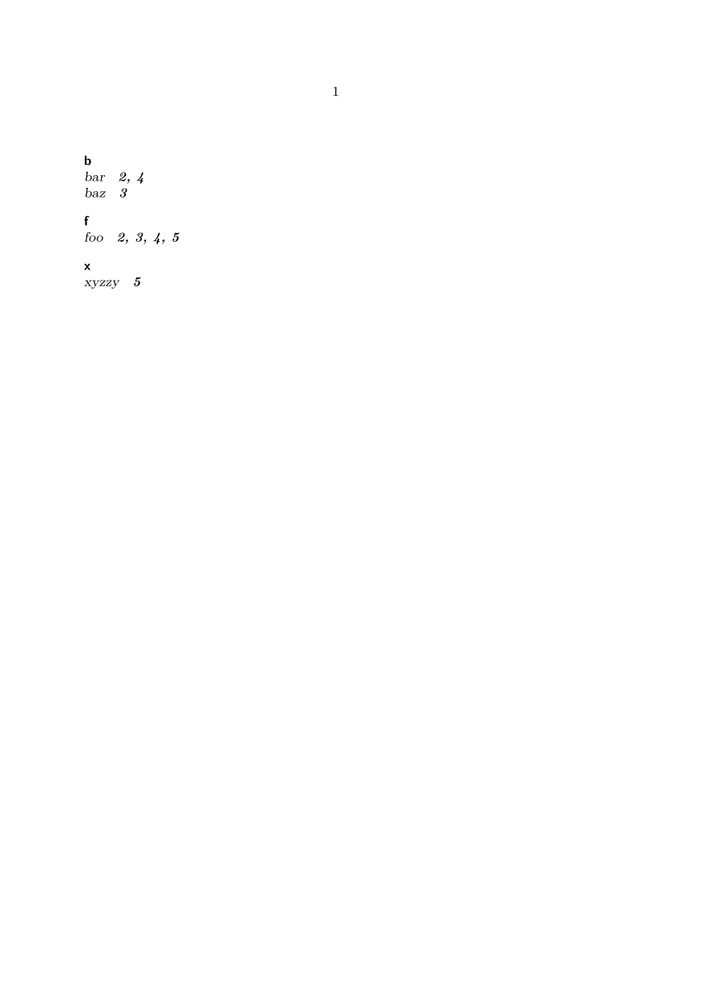
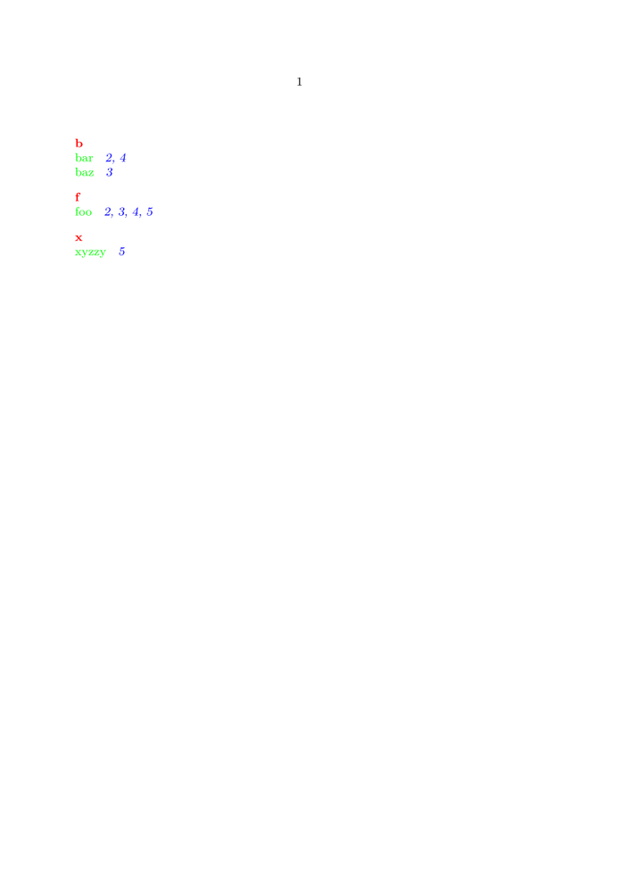
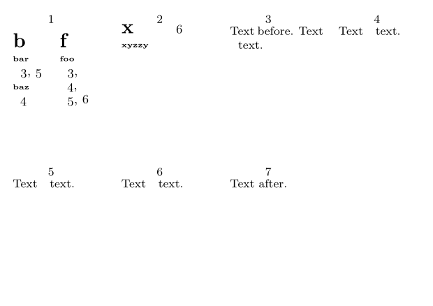
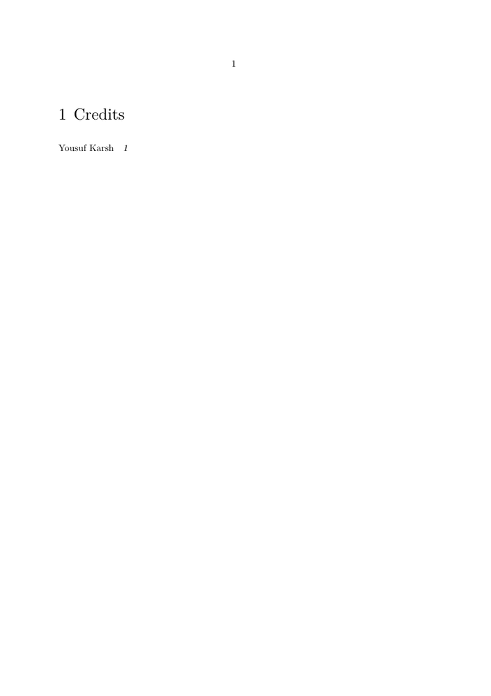

Basics
Use indexes as follows:
- To add the word "word", use: \index {word}
- To sort a word or macro (such as "\ConTeXt" under "C"), use: \index [CONTEXT]{\ConTeXt}
- To use multi-levels (up to three), use a plus symbol: \index {beans+baked}
- To cross-reference items, use \seeindex : \seeindex [CONTEXT]{\ConTeXt}{\TeX}
- To include the index without a title, use: \placeindex
- To include the index with a title, use: \completeindex
Note that the \completeindex command might not work correctly. In such situations you can use: \title{Index} \placeindex
Example
My \index{dog}dog is a \index{dog+bullterrier}bullterrier named \seeindex{Dolly}{Underware}Dolly. He doesn't like \index{cat}cats. There are a lot of \index{cat+stray}stray cats, but only a few of them are \index{cat+Siamese}Siamese. \placeindex
- 
Styling the Index
Registers consist of three text elements that can be styled independently: the sections headings, the entry text, and a page number (reference). For formatting purposes each has its own key so it can be referred to consistently:
- style refers to the style of headings ; usually these are the letters of the alphabet.
- textstyle refers to the typeset content of an entry;
- pagestyle refers to the typeset page number of an entry;
- page numbers are references, so their appearance depends on the PDF navigation settings as well.
General Setup
The appearance of a register can be configured with \setupregister. An example setup for the register entity could look like:
\defineregister [entity] \setupregister [entity] [ style=sansbold, %% headings textstyle=slanted, %% entries pagestyle=bolditalic, %% page refs n=1, %% columns ]
This typesets sections in bold face sans serif, entries with slant, and page references in italic. Also, the register will use a single column.
\setupregister is consistent with the common interface to text style. Thus for every style there is a corresponding color option (color, textcolor, and pagecolor):
\setupregister [entity] [ color=red, textcolor=green, pagecolor=blue, ]
Naturally, self-defined alternatives are valid as well:
\definefontfeature [textfigures] [onum=yes] \definealternativestyle [reg:bigbold] [\bfc] [] \definealternativestyle [reg:tinybold] [\bfxx] [] \definealternativestyle [reg:bignum] [\tfc\addff{textfigures}] [] \defineregister [entity] \setupregister [entity] [ style=reg:bigbold, textstyle=reg:tinybold, pagestyle=reg:bignum, ]
Use with care!
Processors
For finetuning, there is a mechanism called processors; they are created via \defineprocessor:
\defineprocessor [relevant] [style=italic]
To apply it to a register entry, we employ the -> operator:
Text \entity{foo}text. Text \entity{relevant->bar}text. Text \entity{baz}text.
This will render bar’s entry in the register entity in italic font, while the other two entries remain unchanged.
A processor is not local to a specific register. Once defined it can be applied to different registers, yielding the same effect:
\defineregister [first] \defineregister [second] \defineregister [third] \defineprocessor [relevant] [style=italic,color=blue] \starttext %%%%%%%%%%%%%%%%%%%%%%%%%%%%%%%%%%%%%%%%%%%%%%%%%%%%%%%%%%%% \placefirst \placesecond \placethird \page Text before. Text \first {foo} \first {relevant->bar 1} \first {baz}text. Text \second{foo} \second{relevant->bar 2} \second{baz}text. Text \third {foo} \third {relevant->bar 3} \third {baz}text. Text after. \stoptext %%%%%%%%%%%%%%%%%%%%%%%%%%%%%%%%%%%%%%%%%%%%%%%%%%%%%%%%%%%%%
The same processor can be applied to to both entries and page numbers. For page numbers, apply the -> operator on the optional first argument:
\entity[relevant->]{foo}
Note that \entity[relevant]{foo} is not enough.
Without the ->, the first argument is interpreted as sort
key.
However, if in addition to the page number processor you wish to supply
a custom sort key, then the sort key must follow the processor:
\entity[relevant->baz]{foo}
In this example, the page number will be displayed using the processor relevant and the entity foo will be treated like the string baz for sorting purposes. Of course, page number and text formatting can be combined:
\entity[relevant->]{relevant->foo}
Processors work well with multi-level indices:
\entity {relevant->foo} \entity {relevant->foo+bar} \entity {relevant->foo+bar+baz}
Applying multiple processors to a single entry has no effect. ConTeXt will ignore any other processor after the first. (This is probably a feature, as there is no need to repeat the processor with every entry.) However, different entries in the page reference list can be formatted differently:
-
\setupcolor[rgb] \defineregister [stuff] [style=sansbold,pagestyle=italic,n=1] \defineprocessor [relevant] [style=bold,color=red] \defineprocessor [irrelevant] [color=darkgray] \starttext \placestuff \page Text \stuff {relevant->foo} text. \page Text \stuff {foo} text. \page Text \stuff [relevant->] {foo} text. \page Text \stuff {irrelevant->foo} text. %% no effect! \page Text \stuff [irrelevant->] {foo} text. \stoptext
- 
Examples
Simple Setup
-
\defineregister [entity] \setupregister [entity] [ style=sansbold, textstyle=slanted, pagestyle=bolditalic, n=1, ] \starttext \placeentity \page Text before. Text \entity{foo} \entity{bar} text.\page Text \entity{foo} \entity{baz} text.\page Text \entity{foo} \entity{bar} text.\page Text \entity{foo} \entity{xyzzy} text.\page Text after. \stoptext
- 
Colorful Setup
-
\defineregister [entity] \setupregister [entity] [ color=red, textcolor=green, pagecolor=blue, n=1, ] \starttext \placeentity \page Text before. Text \entity{foo} \entity{bar} text.\page Text \entity{foo} \entity{baz} text.\page Text \entity{foo} \entity{bar} text.\page Text \entity{foo} \entity{xyzzy} text.\page Text after. \stoptext
- 
Setup with Alternatives
-
\setuppapersize[A10][A7,landscape] \setuppaper[nx=4, ny=2] \setuplayout[location=middle,marking=on] \setuparranging [XY] \definefontfeature [textfigures] [onum=yes] \definealternativestyle [reg:bigbold] [\bfc] [] \definealternativestyle [reg:tinybold] [\bfxx] [] \definealternativestyle [reg:bignum] [\tfc\addff{textfigures}] [] \defineregister [entity] \setupregister [entity] [ style=reg:bigbold, textstyle=reg:tinybold, pagestyle=reg:bignum, ] \starttext \placeentity \page Text before. Text \entity{foo} \entity{bar} text.\page Text \entity{foo} \entity{baz} text.\page Text \entity{foo} \entity{bar} text.\page Text \entity{foo} \entity{xyzzy} text.\page Text after. \stoptext
- 
Complex Setup
\definefontfeature [textfigures] [onum=yes] \definealternativestyle [reg:heada] [\WORD\ssa\bold] \definealternativestyle [reg:headb] [\word\tfb\sc] \definealternativestyle [reg:pageno] [\addff{textfigures}\italic] \defineregister [entity] [style=reg:heada,pagestyle=normal,n=3] \defineregister [object] [style=reg:headb,pagestyle=reg:pageno,n=2] \defineprocessor [relevant] [style=italic] \defineprocessor [weird] [style=italic,color=red] \defineprocessor [striking] [style=bold,color=blue] \starttext \placeentity \blank[3*big] \placeobject \page \dorecurse{3}{ Text before. \page Text \entity {foo} text. Text \object {striking->bar} text. Text \entity {baz+foo} text. Text \object {foo+bar} text. \page Text \entity[relevant->] {weird->foo} text. \page Text \entity {weird->bar} text. Text \object[weird->] {foo} text. Text \object {baz} text. \page Text \entity[weird->foo] {foo} text. \page Text \entity[weird->] {baz} text. Text \object {baz} text. Text \object {bar+baz} text. Text \entity[weird->] {baz} text. Text \entity {baz+miranda} text. Text \entity {baz+xyzzy} text. Text \object {foo} text. \page Text \entity {weird->foo} text. Text \object[striking->] {bar+baz} text. Text \object {foo} text. Text \entity[relevant->] {baz+xyzzy} text. \page Text \entity[weird->foo] {foo} text. Text \object {bar+xyzzy} text. Text \object {baz} text. Text \object {foo} text. Text \entity[weird->] {baz+xyzzy+meh} text. \page Text \entity[weird->] {weird->foo} text. Text \object[striking->] {foo} text. Text \object {xyzzy} text. Text \entity {baz+xyzzy} text. Text after. } \stoptext
More Registers
\index is only one special case of register. You can define as much different registers as you like:
\defineregister[singular name][plural name], e.g.
\defineregister[mouse][mice] \setupregister[mouse][style=\ss] \mouse{rat} \placemouse
(Don't know if the plural form is used anywhere...)
You can define different registers for different styling and combine their output like \placeregister[index,otherindex].
Tricks
- A register per chapter: \placeregister [index][criterium=chapter]
- Place a word in text and index: \def\Tindex#1{\index{#1}#1} -- Please someone enhance this to get space correction, [] sorting etc.!
- If you want to use register commands in xml setups, remember that they need to be enclosed within \expanded {...} ; for details, see Expansion_Control .
For advanced cases, you can use the general form \setregisterentry (instead of \index etc.) like
\setregisterentry[index][entries:1=Upper level,entries:2=lower level,processors:1=boldface,processors:2=italicface,]
If you have a series of index entries that need special formatting, it might make sense to define a shortcut like
\define[1]\CommandIndex{\setregisterentry[index][entries:1=Commands,entries:2=#1,processors:2=type]} \CommandIndex{chapter}
Collapse Page Numbers
Often index entries like "mouse 2,3,4,5" aren’t desired, instead ConTeXt should shorten it to "mouse 2–5". This is called collapsing. There are two ways to collapse page numbers:
- \setupregister [compress=yes]
- Enclose several pages in \startregister … \stopregister :
\startregister[index][Keycode1]{Keyword} % lots of text \stopregister[index][Keycode1]
The first parameter of \startregister is the name of the index – "index" is the default index, but you might use your self defined registers as well.
The second parameter is a keyword to distinguish several overlapping range-entries.
It’s also possible to use the sorting parameter:
\startregister[index][levi][Levi-Strauss]{Lévi|-|Strauss} % lots of text \stopregister[index][levi]
This will create a range with the key levi which will put the entry "Lévi-Strauss" in the register "index" (the "normal" register) and sort it under "Levi-Strauss."
Rename Register Heading
Change the \completeregister heading using the \setupheadtext command. For example:
-
\defineregister[photographer][] \setupregister[photographer][ indicator=no, ] \setupheadtext[photographer=Credits] \starttext \photographer{Yousuf Karsh} \completephotographer \stoptext
- 
Alphabetical Headers
- You get uppercase letters using \setupregister [register][n=2,command=\Word,style=normal] .
- The alphabet headers can be disabled by \setupregister [register][indicator=no] .
- The vertical spaces between the entry groups for subsequent letters is governed by the parameter before in the same command (default: \blank , change to before=, to get no additional space).
Footnote numbers in registers
If you want index terms that appear in footnotes (instead of in the main text) to show the footnote number in their index entries, you can use the \setregisterentry command. Wolfgang gave an example of how to use the optional third argument to achieve this:
\def\IndexPageCommand#1% {#1\doifsomething {\currentregisterpageuserdata{footnote}} {\high{\currentregisterpageuserdata{footnote}}}} \setupregister[index][pagecommand=\IndexPageCommand]
To mark up terms within footnotes, you would then use:
\expanded{\setregisterentry[index][entries={Indexentry}][footnote={\rawcountervalue[footnote]}]
Sorting
The sorting of the index is influenced by the current language tag. You can override that with the language key of \setupregister. There are a few additional "languages" for sorting, as defined in sort-lan.mkiv:
- DIN 5007-1 (German) normal sorting, ß = ss
- DIN 5007-2 (German) phonebook sorting, ä = ae, ö = oe, ü = ue, ß = ss
- Duden (German) ß = s
- de-AT (Austrian German) phonebook sorting; umlauts after base vocal (a, ä, o, ö, u, ü)
- cu (Church Slavonic)
- ocs-scn (Scientific Old Slavonic transcription)
- ru-iso9 (Russian transcription)
Additionally, there’s the method key that influences the order of upper-/lowercase and diacritics:
The details lay in a rather obscure set of methods (see source), for which the following presets are defined:
- method =default {zc,pc,zm,pm,uc} uppercase like lowercase, diacritics separate
- method =before {mm,mc,uc} upper before lower, diacritics ignored
- method =after {pm,mc,uc} lower before upper, diacritics ignored
- method =first {pc,mm,uc} lower before upper, diacritics separate
- method =last {mc,mm,uc} upper before lower, diacritics separate
- If you don’t set the sorting method, the preset first ist used (and not default ).
- There’s no preset for the combination "uppercase like lowercase, diacritics ignored", use method ={zm,pm,zc,zm,uc} .
- The sorting is also influenced by the current language or the language setting in \setupregister .
e.g.
\setupregister[index][ n=1, language=Duden, method={zm,pm,zc,zm,uc}, ]
Coupled Registers
This is a special feature for documents that are only used on screen: Make a word clickable to jump to the index, the first or last occurrence.
Enable it with \setupregister[index][coupling=yes]. Substitute \index with \coupledindex and enjoy!